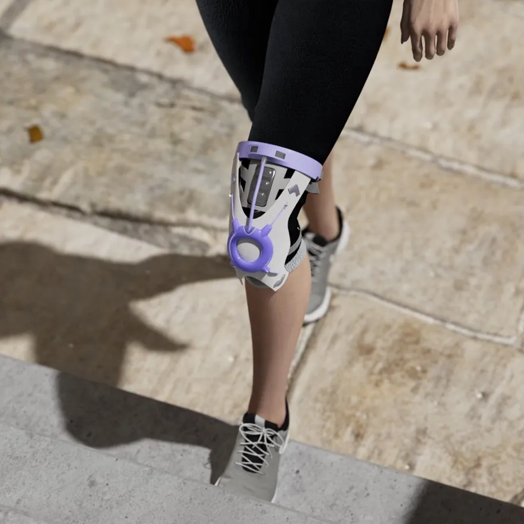
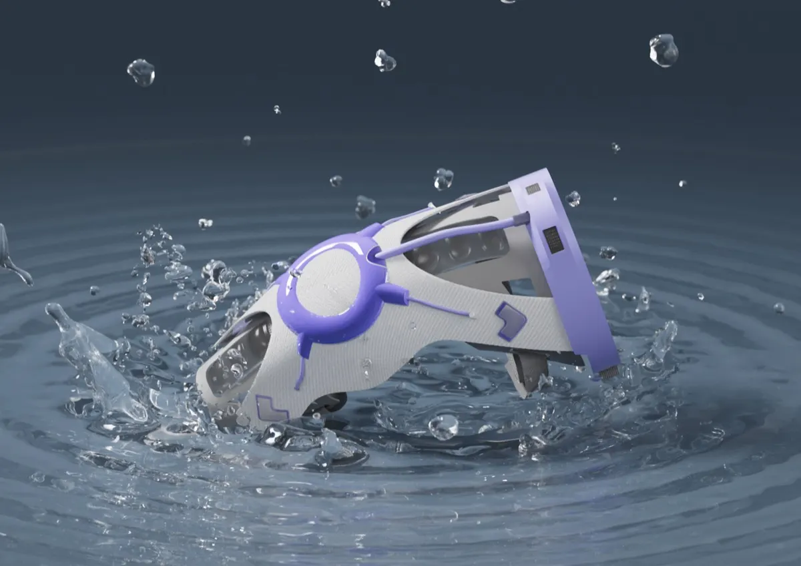
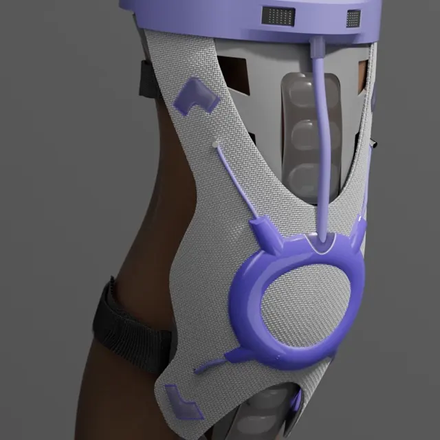
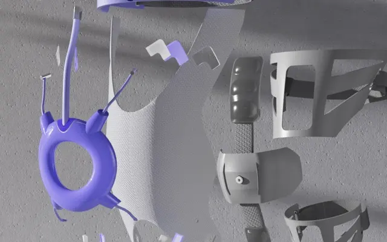
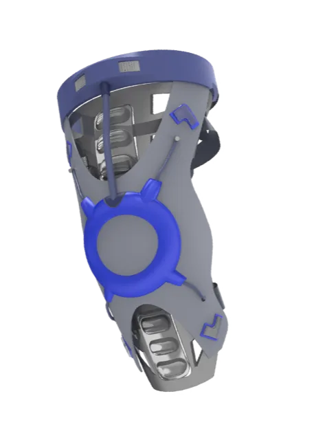

WEARABLE MOVEMENT-SENSING PROTOTYPE
KneeUp
Support you feel. Feedback you can act on.
Your training companion: open the webpage to see squat depth, left/right symmetry and movement-quality feedback from the camera.
SIMULATED DATA Simulated unless ● LIVE is on

WHY NOW
Your knees carry the load.
Without feedback, changes in movement and accumulated load can go unnoticed.
≈61/100k·year
Estimated annual meniscal injuries per 100,000 people (literature estimate)
Source: PMC9205760 · Literature estimate
12–14%est.
Literature estimate: meniscal findings on knee MRI in asymptomatic people
Source: literature estimate (reported range)
Figures are literature-based context estimates, not measurements from this project.
PRODUCT
Support, airflow and sensing in one brace.


Support
A close-fitting support structure designed to guide knee movement, with adjustable support that the wearer can feel.

Airflow
Air channels run through the brace to support ventilation during longer training sessions and make sustained wear more comfortable.

Intelligence
The sensing and feedback roadmap: camera input is available now; textile sensing is in development.
LIVE DEMO
How did that movement go?
Three channels provide immediate reference feedback: visual cues, game feedback and signal charts. These are movement-quality indicators only.
- SEEING
- MEASURING
- EXPLAINABLE
Camera frames will appear here with a skeleton overlay, knee angles and movement cues.
Camera preview with skeleton overlay appears here.
ON-DEVICE Camera frames are processed only in your browser. No video is uploaded and no face data is stored.
Movement cues will appear here: knee direction, squat depth and left/right symmetry.
Cues appear here during the demo.
Charge through squats and climb with combos. Successful movements give immediate visual feedback. Start a demo to activate the game.
Charge faster and the combo climbs — good reps show, instantly.
TECHNOLOGY
Three layers, with two running today.
L1 · VISION AI
Pose estimation in your browser
MediaPipe Pose provides a skeleton overlay and computes knee angles, symmetry and movement-quality scores on the device.
RUNS TODAYL2 · RULE ENGINE
Rep counts, target ranges and cues
Hysteresis counting, target-range checks and cue generation run in the browser. Desktop Chrome also includes an experimental Web Serial interface, with ● LIVE / ○ SIMULATED indicators and a signal-loss fallback. Real-time integration with the Arduino prototype is not yet validated.
RUNS TODAYL3 · TEXTILE SENSING
Signals directly from the brace
The future sensing layer aims to collect signals from textile sensors worn against the body, reducing dependence on a camera.
ROADMAPThe demo above runs L1 and L2 today.
The hardware has been powered and serial output demonstrated on the bench. These images show working prototype units. Live integration with this website has not been completed.
BUSINESS
Two routes to market.
FOR INDIVIDUAL TRAINING
Personal edition
Your training companion: open the website to see squat depth, symmetry and movement quality from camera input. No installation or dedicated hardware is required for the camera demo.
Your always-available training companion — instant depth, symmetry and quality scores in the browser.
Open the Training DemoFOR FACILITIES
Facility edition
A coach-facing screen concept for reviewing movement quality across a group and distributing training settings.
A live coach console — the whole squad's movement quality on one screen.
See the Facility EditionSensor-equipped braces address the need for physical sensing. KneeUp adds a browser-based layer with no installation: interactive 3D movement feedback and training games.
TRANSPARENCY
Clear boundaries are part of the product.
KneeUp makes no medical claims. It provides training feedback; qualified professionals handle diagnosis and care. These boundaries shape the product, not just its footer.
KneeUp is a training tool, not a medical device — form feedback, not diagnosis. We say it up front, on purpose.
NOT A MEDICAL DEVICE
A sports-support and training-feedback prototype, with no diagnosis, treatment or efficacy claims.
A sports-support, training-feedback prototype: no diagnosis, no treatment, no outcome promises.
ON-DEVICE BY DEFAULT
Camera frames are processed in the browser, with no video upload and no stored face data.
Camera frames are computed inside your browser — nothing uploaded, no face stored.
LABELLED SIMULATED
Every simulated channel carries a SIMULATED indicator so visitors can distinguish demonstration data from live input.
Anything not from live hardware carries a SIMULATED chip — verifiable on the spot.
Roadmap: determine classification and an appropriate certification path according to the eventual intended use. This is planned, not a current certification claim.
TEAM FREE WILL